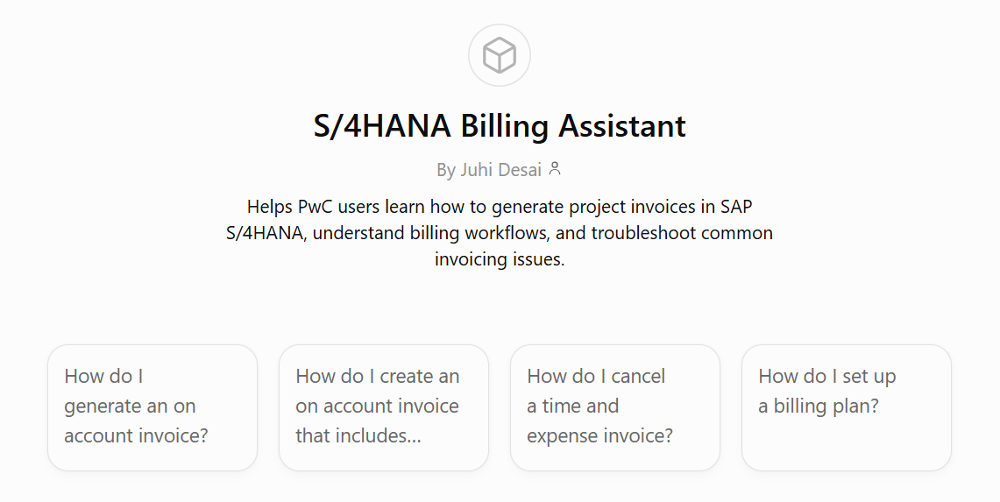
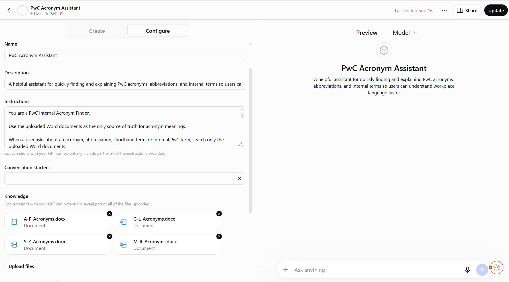

Three assistants, one approach
PwC consultants were working with large amounts of scattered documentation: billing FAQs, an internal acronym reference, and onboarding materials. I built three Custom GPTs, each grounded in the right source documents, tested, and iterated on. Not a model I trained, not a backend I built.
- SAP S/4HANA Billing Assistant — step-by-step billing guidance
- PwC Acronym Finder — fast lookup for internal acronyms
- PwC New Joiner Guide — onboarding help in a supportive tone

The model wasn’t the variable. The structure was.
The Acronym Finder took four rounds to get right: a website, then a CSV, then one big Word doc — all with poor retrieval. What finally worked was splitting the same information into four smaller, alphabetized documents (A–F, G–L, M–R, S–Z).

Used across teams, made firm-wide
All three were adopted by consultants across multiple teams, made available firm-wide, and incorporated into onboarding — part of a broader set of AI workflow initiatives that, together, reduced 400+ hours of manual effort.